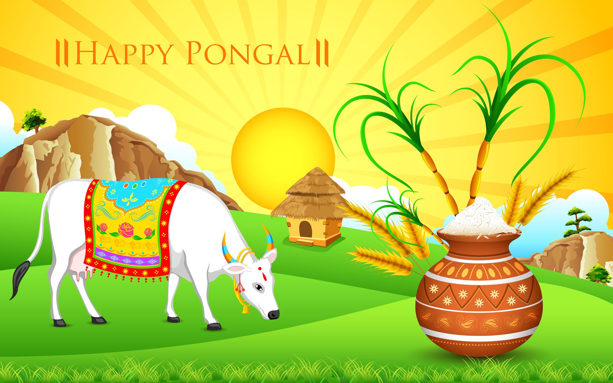
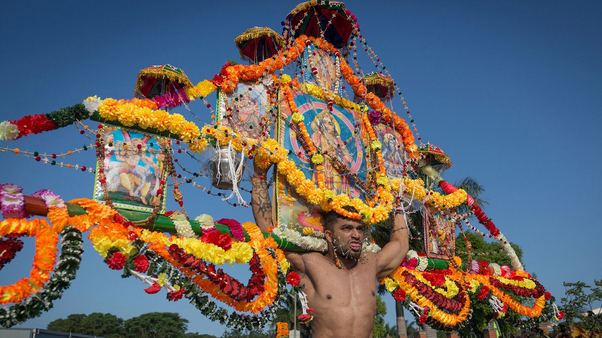
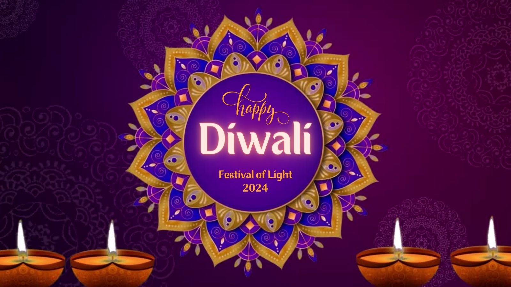

Prominent Festivals of India
Tamil Nadu
Famous Festivals:
- Pongal
-

Pongal is a harvest festival celebrated in January. It is dedicated to the Sun God and marks the beginning of the Tamil month Thai.
- Karthigai Deepam
-
 Karthigai Deepam is the festival of lights celebrated in the Tamil month of Karthigai (November-December). Lamps are lit to symbolize the victory of light over darkness.
Karthigai Deepam is the festival of lights celebrated in the Tamil month of Karthigai (November-December). Lamps are lit to symbolize the victory of light over darkness.
- Thaipusam
-

Thaipusam is a festival celebrated by Tamil Hindus to honor Lord Murugan. Devotees carry 'kavadi' as a symbol of devotion and penance.
Maharashtra
Famous Festivals:
- Ganesh Chaturthi
-
 Ganesh Chaturthi is a ten-day festival celebrating the birth of Lord Ganesha. It is marked by the installation of clay idols of Ganesha in homes and public places.
Ganesh Chaturthi is a ten-day festival celebrating the birth of Lord Ganesha. It is marked by the installation of clay idols of Ganesha in homes and public places.
- Gudi Padwa
-
 Gudi Padwa is the Marathi New Year festival, celebrated in March or April. It marks the beginning of the spring season and the start of the Hindu lunisolar calendar.
Gudi Padwa is the Marathi New Year festival, celebrated in March or April. It marks the beginning of the spring season and the start of the Hindu lunisolar calendar.
- Diwali
-

Diwali, the festival of lights, is celebrated across Maharashtra with great enthusiasm. It symbolizes the victory of light over darkness and good over evil.
West Bengal
Famous Festivals:
- Durga Puja
-
 Durga Puja is the biggest and most significant festival in West Bengal, celebrating the victory of Goddess Durga over the buffalo demon Mahishasura.
Durga Puja is the biggest and most significant festival in West Bengal, celebrating the victory of Goddess Durga over the buffalo demon Mahishasura.
- Poush Mela
-
 Poush Mela is an annual fair and festival held in Santiniketan to mark the harvest season. It includes folk music, dance performances, and traditional crafts.
Poush Mela is an annual fair and festival held in Santiniketan to mark the harvest season. It includes folk music, dance performances, and traditional crafts.
- Kali Puja
-
 Kali Puja is dedicated to Goddess Kali and is celebrated with devotion, especially in Kolkata, with lighting of lamps, offerings, and firecrackers.
Kali Puja is dedicated to Goddess Kali and is celebrated with devotion, especially in Kolkata, with lighting of lamps, offerings, and firecrackers.